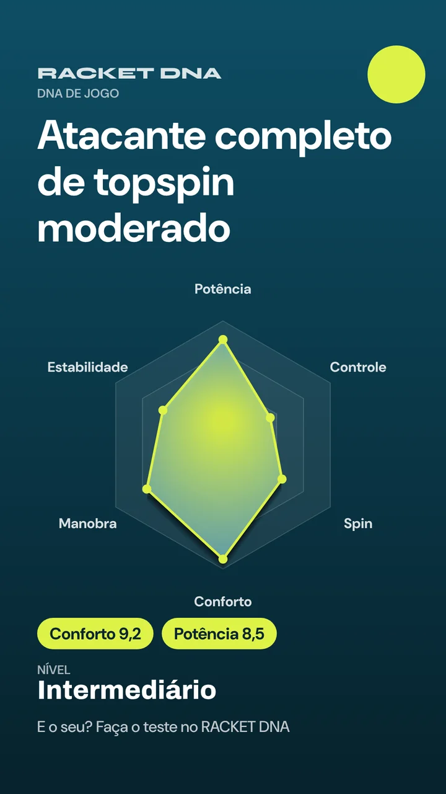

Racket DNARaquete de tênis · by SPORT DNA

Seu DNA de jogo e a sua raqueteQual raquete combina com o seu braço, o seu nível e o jeito que você bate na bola?
Você informa
Idade e força · Dor no braço · Medida da mão · Nível e frequência · Estilo, topspin e swing · Onde você erra · Raquete atual e sensação · Orçamento e corda
A gente calcula
- Peso
- Balanço
- Swingweight
- Rigidez (RA)
- Cabeça
- Padrão
- Corda e tensão
- Grip